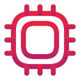
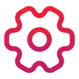

Cheat sheet · Développeur IA · Avancé · 1/2
Sous le capot, le harness
Le modèle prédit, le harness agit, la gateway gouverne.

Un appel au modèle : prefill, decode1. Prefilllit le prompt en parallèle → temps avant le 1er token
2. Decodeun token par passe, réutilise le cache → tokens par seconde
- KV cache : évite de recalculer K et V de tous les tokens précédents. Llama 3 8B : 128 Ko par token.
- Un tour = un appel complet : 5 à 20 tours pour une tâche simple.
Le prompt caching
System prompt
Tool definitions
Instructions projet
Conversation + résultats des tools
Nouveau message
← stable : servi par le cachevolatil : recalculé →
- Préfixe déjà vu : prefill sauté, ~90 % de remise.
- Casse le cache : changer le system prompt, brancher ou retirer un MCP, changer de modèle.
- Cache expiré : rien d'oublié, mais repayé plein tarif.
 Où part la facture
Où part la facture
- L'entrée fait le volume : chaque tour renvoie tout le préfixe. La sortie coûte ~5× plus au token, mais pèse peu.
- Reasoning tokens : prix de sortie, souvent invisibles. L'effort se choisit par tâche.
- SLM (1 à ~15 Md de paramètres) : le SLM trie et route, le LLM raisonne.
Réduire ce qui entre rapporte plus que raccourcir la sortie.

Primitives du harness : qui décide ?| Primitive | Qui décide qu'elle s'applique |
|---|---|
| Instructions projet | personne : toujours chargées |
| Skill | le modèle, sur sa description |
| Hook | le harness, à chaque événement |
| Sous-agent | l'agent ou toi |
| MCP | le modèle, à la demande |
Le harness est un actif d'équipe versionné, sinon c'est de l'agentic debt.
Hooks : une garantiequoi que dise le modèle
Avant un tool bloquer
rm -rfAprès un tool formater
Fin de tour lancer les tests
Fin de session archiver
« Lance toujours les tests » dans les instructions est une suggestion. Le hook est une garantie.
 Une allowlist n'est pas une sandbox
Une allowlist n'est pas une sandbox
Allowlistfiltre des motifs de commande. Se contourne :
npm test && curl …Sandboxborne les effets : fichiers, réseau, droits. Conteneur, VM, compte dédié.
Le seul périmètre réel est l'isolation : aucun prompt n'en fait sortir l'agent.
 6 tips, un par module
6 tips, un par module
- Garde le début du contexte stable : c'est lui que le cache rentabilise.
- Ce qui doit toujours arriver est un hook, pas une consigne.
- Donne à l'agent de quoi chercher, pas tout le dépôt.
- Si la spec n'est pas versionnée avec le code, elle ment déjà.
- Ajoute un agent seulement si tu sais qui relira son travail.
- Tracé et portable : un agent qu'on peut auditer, et quitter.